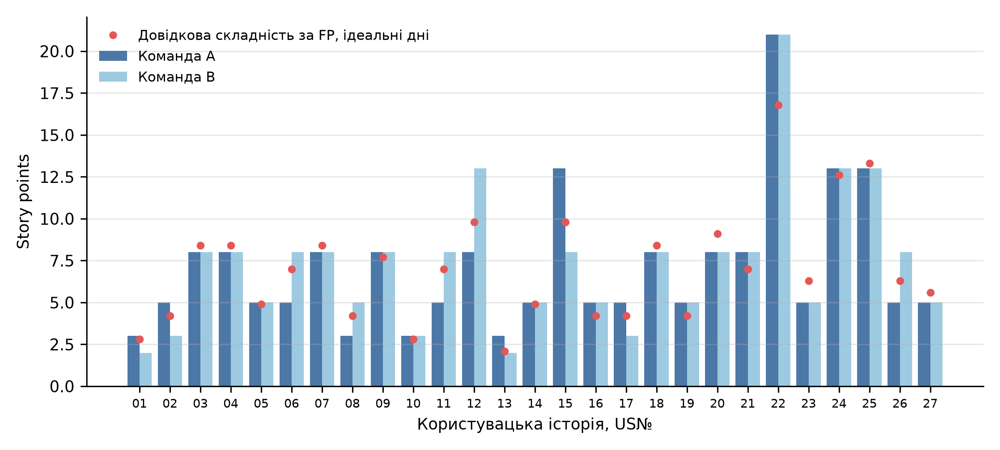
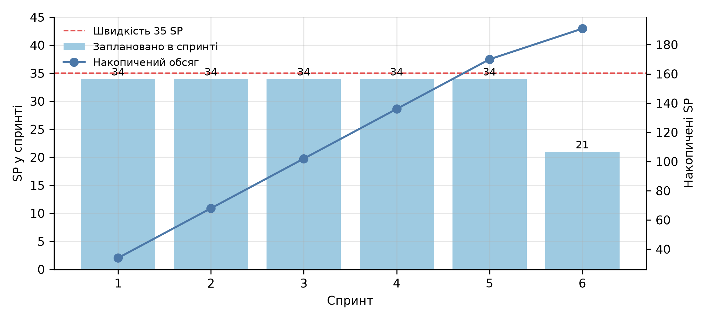

КПІ ім. Ігоря Сікорського · Практична робота № 7
Planning Poker для Product Backlog першого релізу Shopizer
Виконав: Соколов Олександр, студент групи ІП-33
Дисципліна «Економіка IT-індустрії та підприємництво»
| Метод | Висновок |
|---|---|
| Planning Poker | підходить |
| T-shirt Size | для огляду, порівняно далі |
| Bucket System | для сотень елементів |
| Dot Voting | пріоритет, не розмір |
| Інші три | не дають чисел |
| Показник | Значення |
|---|---|
| Користувацьких історій | 27 |
| Пріоритети MoSCoW | 17 Must, 7 Should, 3 Could |
| Операцій REST API з ПР3 | 63 унікальні |
| Розмір за функціональними точками | 272 UFP, 299.2 AFP |
| Частка всього продукту (1 525 AFP) | 19.6% |
Історія = одна або кілька транзакцій ПР3: «Реєстрація клієнта» – 1 операція, 4 UFP; «Відновлення і зміна пароля» – 4 операції, 12 UFP [4]
Голосування змодельовано програмою: розкид 12% між учасниками, 25% на історію, зближення з медіаною на 65% за раунд. Це розкрито у звіті

Оцінки історій двома командами, story points
| Метод і команда | Разом SP | Раундів | Похибка, % | Спірмен з UFP |
|---|---|---|---|---|
| Planning Poker, A | 191 | 1.30 | 15.0 | 0.94 |
| Planning Poker, B | 196 | 1.48 | 13.9 | 0.95 |
| T-shirt, A | 185 | 1.00 | 15.5 | 0.89 |
| T-shirt, B | 182 | 1.00 | 18.6 | 0.86 |
У межах моделі Planning Poker точніший: дрібніша шкала (9 значень проти 5) і обговорення; T-shirt швидший, занижує обсяг (XL = 13). Збіг команд вищий у T-shirt (74.1% проти 63.0%) через грубу шкалу, а не точність
v = 5 · 10 · 0.7 = 35 SP на спринт
Cспр = 6 · 2 500 · 10 / 21.67 = $6 922
5 учасників, спринт 10 днів, фокус 0.7; Scrum Master і Product Owner по 0.5 ставки; $2 500 на місяць [5], курс 45.666 грн [6]
| Показник | Значення |
|---|---|
| Спринтів | 6 (5.46) |
| Тривалість | 12 тижнів |
| Трудомісткість | 16.6 PM |
| Вартість | $41 532 |
| У гривнях | 1.90 млн |
| За story point | $217 |

Обсяг робіт за спринтами (команда A)
| Оцінка | Людино-місяців | Вартість, $ | Тижнів |
|---|---|---|---|
| Story points (Planning Poker) | 16.6 | 41 532 | 12 |
| Функціональні точки, 299.2 AFP | 28.8 | 71 923 | – |
Повний список – у звіті